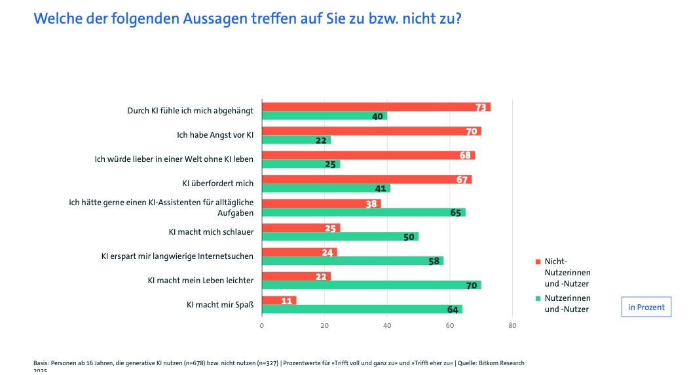
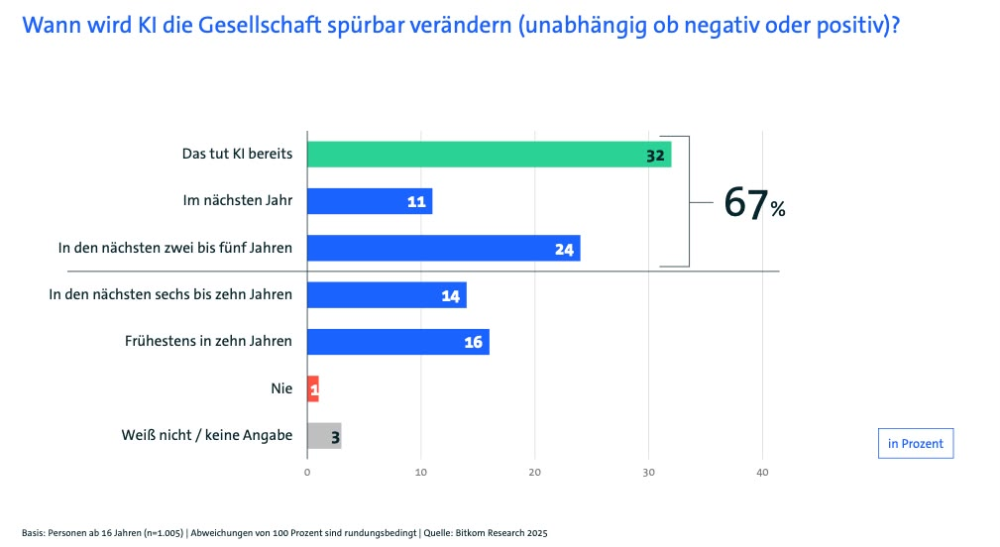
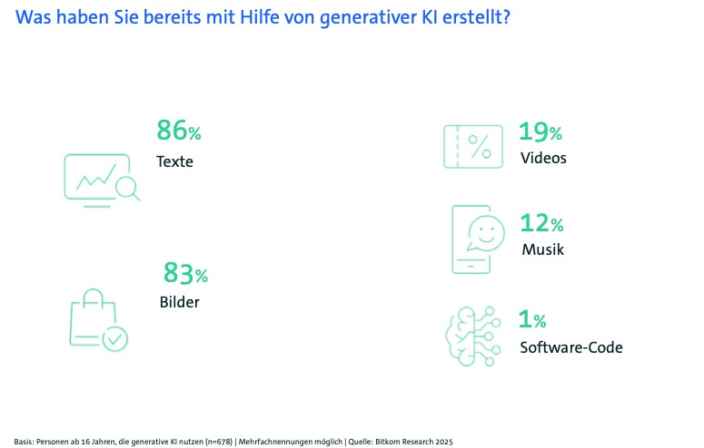

KI im Klassenzimmer: Revolution oder nur ein Hype? Was die Schulpraxis jetzt wissen muss
Künstliche Intelligenz (KI) ist heute überall. Sie ist das Schlagwort unserer Zeit und doch bleibt sie für viele von uns ein Mysterium. Hast du dich auch schon mal gefragt, ob KI den Unterricht wirklich verbessern kann oder ob wir uns gerade in ein technisches Abenteuer stürzen, dessen Ausgang niemand kennt? Spätestens seit dem Durchbruch von ChatGPT Ende 2022 hat die Debatte eine völlig neue Qualität erreicht. KI ist nicht mehr nur ein Thema für hochspezialisierte Forschungslabore. Sie ist endgültig in unserem Alltag angekommen. In den Unternehmen, in unseren Privathaushalten und, was für uns besonders spannend ist, mitten in unseren Schulen. Die Reaktionen darauf könnten unterschiedlicher nicht sein. Sie schwanken kontinuierlich zwischen großer Euphorie und der Sorge um unsere Zukunft. Auf der einen Seite steht die Hoffnung, dass KI als eine Art „Kraft für das Gute“ (Ernst-Wilhelm Gohl, 2023, S. 4) komplexe Probleme lösen kann. Auf der anderen Seite wächst die Sorge vor einer existenziellen Bedrohung für unsere Zivilisation (Ernst-Wilhelm Gohl, 2023, S. 4). Dass das Thema ernst zu nehmen ist, zeigen auch aktuelle Zahlen. Bereits 81 % der deutschen Unternehmen stufen KI als die wichtigste Zukunftstechnologie ein (Bitcom e.V., 2025, S.3 / S.9). Doch während die Technik rast, stellen sich uns gleichzeitig tiefgreifende Fragen: Was passiert mit unserer menschlichen Autonomie? Wer trägt am Ende die Verantwortung (Detlef Schwarting, 2023, S. 3 (Kurzfassung)?
Doch was verbirgt sich eigentlich hinter dem medialen Hype? Wie können wir diese revolutionäre Technologie einordnen, ohne den Überblick zu verlieren? In diesem Blogbeitrag wollen wir gemeinsam hinter die Kulissen schauen und klären, was KI für die Schulpraxis wirklich bedeutet.

Mehr als nur ein Trend – Die Hintergründe der aktuellen KI-Welle
Dass wir uns in einer Phase höchster Aufmerksamkeit für die KI befinden, ist kein Zufall. Es ist vielmehr das greifbare Ergebnis einer jahrzehntelangen Entwicklung. Während die Fachdebatte lange Zeit von eher abstrakten Begriffen rund um Algorithmen dominiert wurde, hat die aktuelle Qualität maschineller Erzeugnisse durch einen massiven Technologiesprung eine völlig neue Dimension erreicht. Ein wesentlicher Treiber dieser rasanten Entwicklung ist vor allem die gewachsene Rechenleistung moderner Computer. Diese Power ermöglicht es erst, die gigantischen Datenmengen zu verarbeiten, die durch die zunehmende digitale Vernetzung fast aller menschlichen Lebensbereiche entstehen. Diese Daten dienen heute als das „Futter“ für digitale Operationen. Ein entscheidender Faktor war zudem der Durchbruch bei den Methoden des Deep Learning, die ein Lernen aus Beispielen nach dem Vorbild des menschlichen Gehirns ermöglichen und die KI so leistungsfähig machen, wie wir sie heute erleben.
Aktuelle empirische Studien unterstreichen, wie tief diese Entwicklung bereits im öffentlichen Bewusstsein verankert ist. Laut dem Bitkom-Studienbericht 2025 wird KI von einer breiten Mehrheit der Bevölkerung und der Unternehmen als die wichtigste Zukunftstechnologie angesehen (Bitkom e.V., 2025, S.3 / S.9). Interessant ist dabei der enorme Relevanzgewinn innerhalb kürzester Zeit. Während im Jahr 2024 noch 73 % der Unternehmen die Technologie als entscheidend einstufen, ist dieser Wert im Jahr 2025 bereits auf 81 % angestiegen (Bitkom e.V., 2025, S.9). Gleichzeitig ist ein deutlicher Wandel in der generellen Einstellung zu beobachten, da Vorbehalte und Skepsis spürbar zurückgehen. Nur noch 17 % der Unternehmen und 28 % der Bürger halten KI im Jahr 2025 für einen überbewerteten Hype, was bei den Unternehmen einem Rückgang um 9 % innerhalb eines Jahres entspricht (Bitkom e.V., 2025, S.9). Das Bewusstsein für die transformative Kraft dieser Technologie wächst somit unaufhaltsam in allen gesellschaftlichen Sektoren, von der Medizin über die Cybersicherheit bis hin zu öffentlichen Verwaltung. Mittlerweile sind bereits 2/3 der Bevölkerung der festen Überzeugung, dass KI die Gesellschaft schon heute spürbar verändert oder dies spätestens in den nächsten Jahren tun wird (Bitcom e.V., 2025, S.10). Dieser Wandel macht auch vor der Schultür nicht halt und stellt uns vor die Frage, wie wir im Bildungsbereich auf diese Umwälzung reagieren.

Definitionssache – Was wir unter künstlicher Intelligenz verstehen
Wenn wir über Künstliche Intelligenz sprechen, müssen wir zugeben, dass selbst in der Informatik und Philosophie eine präzise und allgemeine Definition schwerfällt. Oft wird der Begriff einfach als ein unscharfer Sammelbegriff für Computersysteme verwendet, deren Fähigkeiten unseren menschlichen Intelligenzleistungen zumindest ähneln. Um die technologische Realität aber wirklich zu greifen, hilft es, strikt zwischen zwei Kategorien zu unterscheiden, der schwachen und der starken KI. Vielleicht überrascht es dich, aber die sogenannten schwachen KI-Systeme sind bereits ein fester Bestandteil deines Alltags. Sie sind auf klar umrissene, spezifische Aufgaben spezialisiert und bilden das Fundament fast aller Anwendungen, die wir heute nutzen. Ob es die Abschaltautomatik in der Waschmaschine ist, die Navigationsdienste, die dich durch den Stau leiten, oder die Gesichtserkennung an deinem Smartphone, überall steckt schwache KI drin. Sogar in der Medizin helfen hochspezialisierte Diagnose-Algorithmen dabei, MRT-Aufnahmen präziser zu analysieren. Wichtig ist hierbei jedoch die Erkenntnis, dass diese Systeme über kein echtes Bewusstsein, kein moralisches Empfinden und kein tieferes Verständnis verfügen. Sie arbeiten ausschließlich innerhalb fester, mathematisch definierter Grenzen und basieren oft auf der statistischen Berechnung von Wahrscheinlichkeiten. Sie „verstehen“ also nicht, was sie tun, sie rechnen es einfach aus. Ganz anders sieht es bei der starken KI aus, die bisher allerdings nur eine theoretische Vorstellung für die Zukunft ist. Man versteht darunter ein hypothetisches Modell einer Maschine, die ein echtes Bewusstsein besäße. Eine solche KI würde nicht nur Daten verarbeiten, sondern wie ein Mensch fühlen, verstehen und aus eigener Intention handeln. Sie besäße die Fähigkeit zum abstrakten, kontextunabhängigen Denken. Das ist eine Vorstellung, die in der Wissenschaft höchst umstritten ist. Während der Philosoph Julian Nida-Rümelin lediglich von einer „maschinellen Bewusstseinssimulation“ spricht, geht David Chalmers weiter. Er argumentiert, dass wir uns möglicherweise schon in den nächsten zehn bis zwanzig Jahren ernsthaft mit dem moralischen Status und potenziellen Rechten fühlender Systeme auseinandersetzen müssen (Ernst-Wilhelm Gohl, 2023, S. 6). Auch aus theologischer Sicht stellt sich hier die Frage, ob ein Subjektstatus allein an kognitive Fähigkeiten oder vielmehr an die körperliche Erfahrung von Schmerz und existenziellen Begrenzungen gekoppelt ist (Ernst-Wilhelm Gohl, 2023, S. 7). Bis heute bleibt die starke KI jedoch eine reine Vision, ein faszinierendes, aber auch beängstigendes Zukunftsbild.
Von Daten zu Wissen – So lernt eine Maschine wirklich
Nachdem wir nun wissen, was KI eigentlich ist, stellt sich die spannende Frage, wie lernt so eine Maschine überhaupt? Der technologische Kern moderner KI-Systeme basiert heute auf dem sogenannten maschinellen Lernen. Das Besondere daran ist, dass Algorithmen nicht mehr starr für jede einzelne Situation programmiert werden müssen. Stattdessen werden sie darauf trainiert, eigenständig Muster und Zusammenhänge in riesigen Datenmengen zu erkennen. In der Praxis unterscheidet man dabei vor allem drei grundlegende Verfahren, die wie unterschiedliche Lernmethoden in der Schule funktionieren. Zuerst gibt es das überwachte Lernen, auch supervised learning genannt. Hier lernt das System wie ein Schüler mit einer Lösungshilfe. Es bekommt menschlich markierte Trainingsdaten vorgesetzt, zum Beispiel Bilddateien, die explizit als „Hund“ oder „Katze“ gelabelt sind. Das System lernt so, Merkmale zu erkennen, um neue Bilder später selbstständig zuzuordnen. Im Gegensatz dazu sucht das unüberwachte Lernen, auch unsupervised learning genannt, völlig ohne menschliche Vorgaben nach verborgenen Strukturen oder Ähnlichkeiten in unmarkierten Datenbergen. Es gruppiert Informationen also ganz von allein nach Gemeinsamkeiten, die uns Menschen vielleicht gar nicht aufgefallen wären. Die dritte Methode ist das verstärkende Lernen oder reinforcement learning. Dabei optimiert das System seine Strategie selbstständig auf ein definiertes Ziel hin, indem es ein mathematisches System aus Belohnung und Bestrafung nutzt. Eine wesentliche Besonderheit, die moderne Sprachmodelle wie ChatGPT so beeindruckend macht, ist das sogenannte Reinforcement Learning form Human Feedback. Hierbei bewerten menschliche Nutzer oder Prüfer die Qualität sowie die Korrektheit der erzeugten Antworten. Dieses Feedback fließt direkt in das Trainingsmodell ein, wodurch sich das System permanent verbessert. Die aktuell fortschrittlichste Form dieser Technologie ist das Deep Learning, das auf künstlichen neuronalen Netzen aufbaut. Diese Netze sind in ihrer Struktur und Funktionsweise grob dem menschlichen Gehirn nachempfunden. Auch wenn diese Systeme im Schulalltag beeindruckende Ergebnisse liefern können, bleibt ein wesentlicher Unterschied bestehen. Eine KI versteht die Inhalte nicht und besitzt kein echtes Bewusstsein für die Bedeutung dessen, was sie erstellt. Auch wenn es sich oft so anfühlt, als würden wir mit einem denkenden Wesen chatten, berechnet ein Sprachmodell ausschließlich statistische Wahrscheinlichkeiten für die logische Abfolge von Wörtern und Sätzen auf Basis der analysierten Internet- und Trainingsdaten. Die Maschine „weiß“ also nicht, was sie sagt, sie berechnet lediglich, welches Wort als Nächstes am wahrscheinlichsten passt. Dieses Wissen ist entscheidend, wenn wir später über die Chancen und Risiken im Unterricht sprechen.
Sortieren oder Erschaffen – Die zwei Hauptkategorien moderner KI-Tools
Für das Verständnis der Technik hinter der KI ist eine Unterscheidung in zwei Hauptbereiche wichtig, da diese grundlegend andere mathematische Ansätze verfolgen. Zuerst begegnet uns im Alltag oft die sogenannte diskriminative KI. Ihr primäres Ziel liegt in der Klassifizierung, Segmentierung und Vorhersage. Das klingt kompliziert, bedeutet aber eigentlich nur, dass sie vorhandene Daten bekannten Kategorien zuordnet. Du kennst das sicher von deinem Spam-Filter im E-Mail-Postfach oder von Systemen zur Gesichtserkennung. Auch Unternehmen nutzen diese Technik oft, um beispielsweise eine automatische Vorauswahl bei Bewerbungsverfahren zu treffen. Doch hier lauert eine große Gefahr, das sogenannte Bias-Problem. Da diese Systeme ihre Muster aus der Vergangenheit ziehen, neigen sie dazu, gesellschaftliche Vorurteile zu übernehmen. Ein bekanntes Beispiel ist der Konzern Amazon, dessen Algorithmus zur Auswahl von Führungskräften systematisch Männer bevorzugte. Das System hatte aus historischen Daten gelernt, dass Männer oft in Führungspositionen saßen, und interpretierte das Geschlecht fälschlicherweise als Erfolgsmerkmal, eine gefährliche Verfestigung bestehender Diskriminierung (Ernst-Wilhelm Gohl, 2023, S. 9). Einen anderen Weg schlägt die generative KI ein, die aktuell für den riesigen Hype sorgt. Diese Form geht einen entscheidenden Schritt weiter. Sie analysiert nicht nur, sondern sie erschafft völlig neue Inhalte wie Texte, Bilder, Videos oder sogar Musik. Wie rasant diese Entwicklung ist, zeigen die Zahlen für Deutschland. Im Jahr 2025 nutzen bereits 67 % der Bevölkerung zumindest hin und wieder solche Anwendungen, während es im Vorjahr gerade einmal 40 % waren (Bitkom e.V., 2025, S. 18). Dabei ist der Markt stark konzentriert. Der unangefochtene Spitzenreiter ist ChatGPT , das von 43% der Bürger und sogar von 70 % der Unternehmen genutzt wird. Dahinter folgen der Microsoft Copilot und Google Gemini (Bitkom e.V., 2025, S.32). Die meisten von uns nutzen generative Werkzeuge am häufigsten, um T exte oder Bilder zu erstellen, während Videos und Musik derzeit noch eine untergeordnete Rolle spielen. Für uns in der Schule bedeutet das, dass wir uns intensiv mit den Sprach- und Bildmodellen beschäftigen müssen, da diese bereits jetzt unseren Alltag und den der Schüler massiv beeinflussen.
